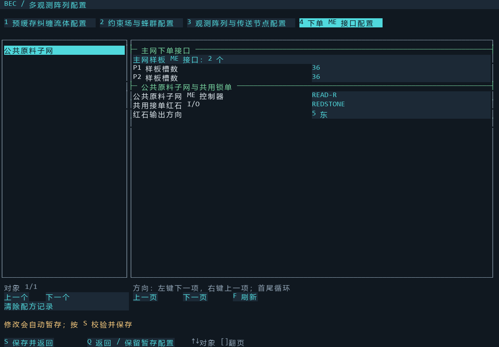
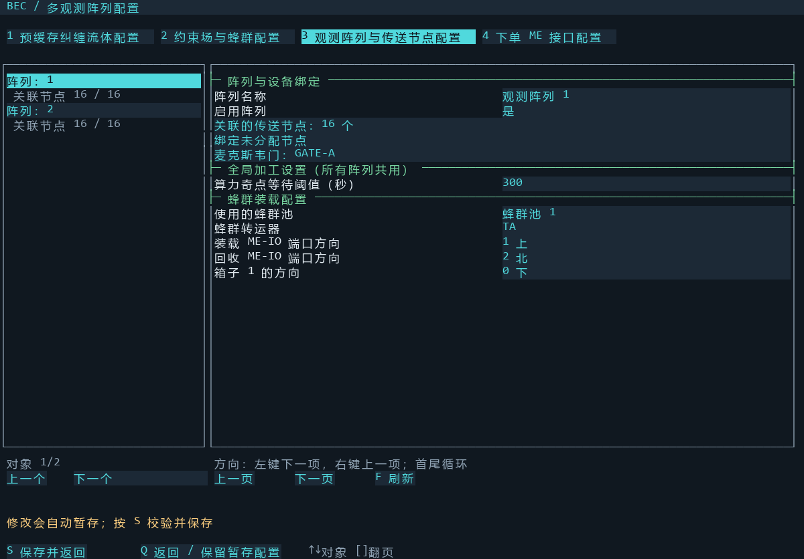
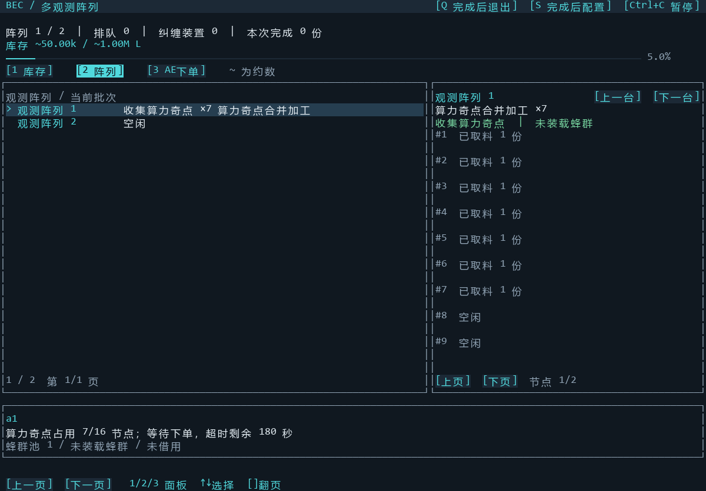
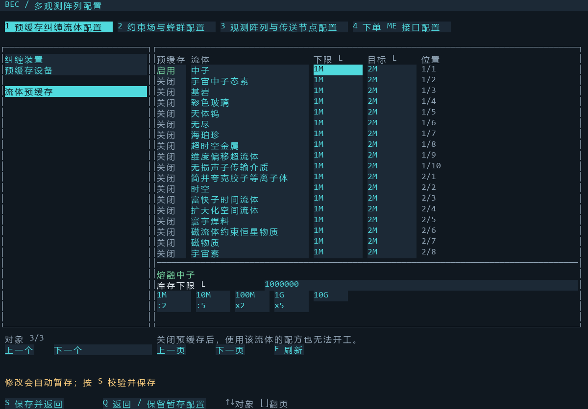
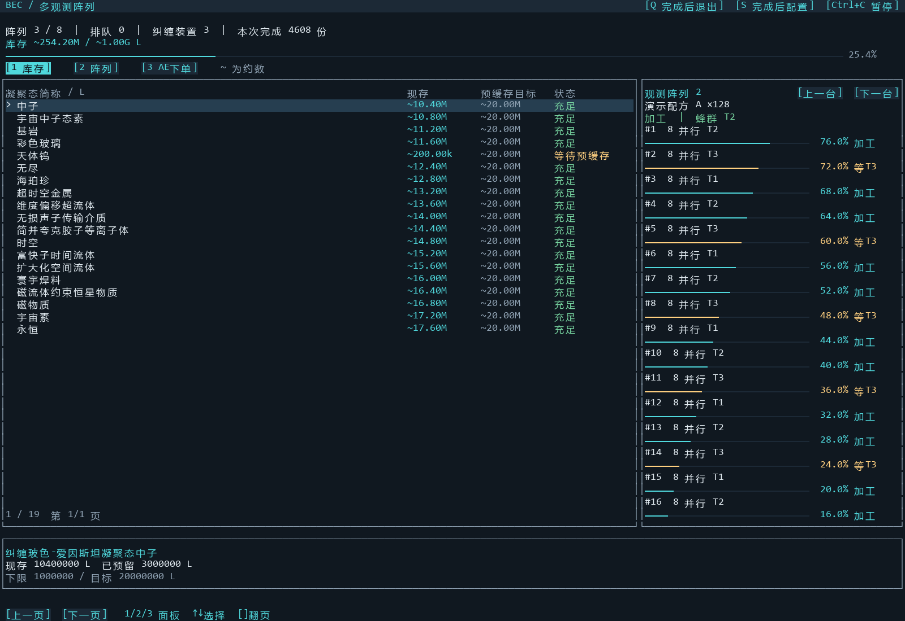

两个主网样板接口 → 一颗原料元件所在的公共子网 → 全部阵列的传送节点。原料不再转运，蜂群网保持各阵列独立。
P1、P2 共用 READ-R 和一个红石输出。配合高级阻挡卡逐单投料；只填公共原料子网控制器、主网样板接口及红石方向。

逐台绑定未分配节点和麦克斯韦门。填写蜂群池、蜂群转运器、两只 ME-IO 端口与箱子方向。全局算力奇点等待阈值默认为 300 秒，适用于全部阵列；不再设置小单专用阵列。没有原料装载 ME-IO 端口或原料搬运路线。

算力奇点每节点固定 1 并行，同种重复也正常收取。填满一台就开工，剩余原料继续分给其他空闲阵列；未填满时，每次取料刷新等待，超时开工。公共原料网尚有未领取余量时保持锁单。收集期间不借蜂群，普通订单仍可交给其他阵列。
下图来自运行中的模拟组件与实际 Lua GUI：已经取入 7 份，尚未借用蜂群。Ctrl+C 保存收集进度和未领取余量；Q/S 结束收集并处理已接材料。

在“预缓存设备”设置转运器、主网流体转运 ME-IO 端口与两个驱动器方向。每种流体只有一个预缓存开关，紧挨名称；启用后同时登记补充元件。按表格顺序放置：第一台驱动器 1～10 槽，第二台 1～9 槽；关闭后保留空位。过滤仍手动设置，库存目标可点击快捷值；÷2、÷5、×2、×5 只调整当前选中的下限或目标，除法舍去不足 1 L 的部分。

大单立即按当前空闲阵列的节点数均分。只有一台空闲时由这台取完整单，稍后空出的阵列可以接下一单。所有可接单阵列都忙时，原料留在公共子网并保持红石锁单。
重启时先锁住下单，扫描节点续做已经领取的任务，公共 AE 中的余料作为新单分配。
普通进度每台至少间隔 0.25 秒扫描一次。节点每两行显示：第一行是编号、并行数和所需蜂群，第二行是长进度条、百分比和状态。160×50 屏幕一页可看全部 16 个节点；fastTier 显示“快速加工”，完成后显示“本批完成”。

安装、退出与续做命令见目录中的使用说明。截图为 Lua GUI 的模拟 GPU 渲染，不是 Minecraft 实机截图。